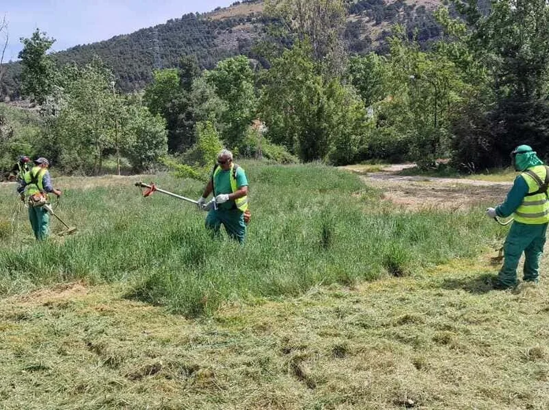

Bienvenidos a nuestro servicio especializado en podas, talas y desbroces en las regiones de Aragón, Navarra y País Vasco en España, así como en Aquitania y Midi-Pyrénées en Francia. Con años de experiencia y un equipo altamente capacitado, estamos comprometidos en mantener sus espacios verdes seguros y hermosos, brindando un servicio integral de gestión forestal y mantenimiento de áreas naturales.
Nuestros Trabajos
- Poda de Árboles: Contamos con expertos que realizan podas cuidadosas y precisas para mantener la salud de sus árboles, fomentar su crecimiento y evitar riesgos de caídas de ramas.
- Tala de Árboles: Realizamos talas de árboles de manera segura y eficiente, ya sea por motivos de seguridad, desarrollo urbano o renovación de su espacio natural.
- Desbroce de Terrenos: Limpiamos terrenos de vegetación no deseada, maleza y matorrales, mejorando la estética y la utilidad de su espacio.
- Mantenimiento de Setos y Jardines: Nuestros servicios de mantenimiento de setos y jardines están diseñados para asegurarte que tus áreas verdes estén siempre en su mejor estado, creando un ambiente sano, acogedor y relajante.



¿Por qué elegirnos?
- Experiencia Local: Conocemos las particularidades de las regiones de Aragón, Navarra, País Vasco, Aquitania y Midi-Pyrénées, lo que nos permite adaptar nuestros servicios a sus necesidades específicas.
- Profesionales Cualificados: Nuestro equipo está formado por expertos en silvicultura y gestión forestal, garantizando un trabajo de alta calidad.
- Compromiso Ambiental: Somos defensores de la conservación del medio ambiente y nos esforzamos por minimizar nuestro impacto en la naturaleza.
- Equipos y Tecnología Avanzada: Contamos con herramientas y equipos de última generación para realizar trabajos eficientes y seguros.
- Atención Personalizada: Entendemos que cada proyecto es único, por lo que ofrecemos un servicio personalizado, adaptado a sus objetivos y presupuesto.
Estamos aquí para cuidar y mantener sus espacios verdes de manera profesional y responsable. Permítanos ser su aliado en la gestión de recursos naturales. ¡Póngase en contacto con nosotros hoy mismo para obtener un presupuesto gratuito y sin compromiso!
Teléfono: +34 647 007 305
Correo electrónico: bioforestvg@gmail.com